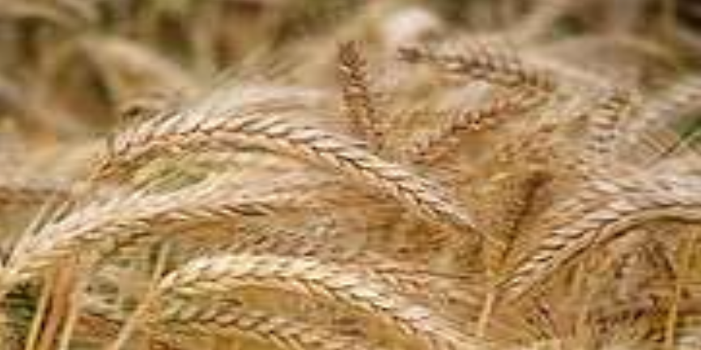
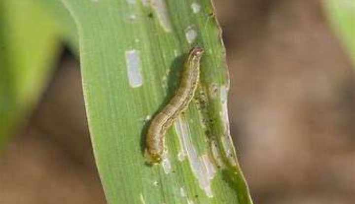
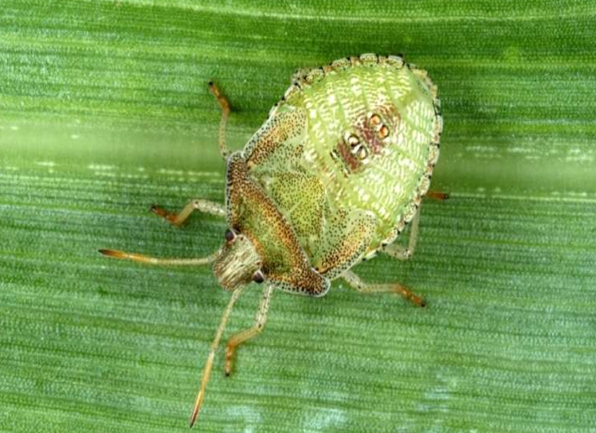

GENERAL INFORMATION
It is quite significant cereal after wheat, maize & rice. Barley is cultivated in summer season in temperate
area while it is sown in winter seasons in tropical zones. In India it is planted in rabi season. It possesses
excellent drought resistance capacity.

CLIMATE
Temperature 12-32°C
Sowing Temperature 12 - 16°C
Harvesting Temperature 30°-32°C
Rainfall
800-1100 mm
SOIL
Barley plants are cultivated on significant number of soil such as sodic, light & saline soil. Although, it
gives good result in moderately heavy loam to sandy soils having neutral to saline response as well as moderate
fertility. Acidic soils are not suitable for barley cultivation.
POPULAR VARIETIES WITH THEIR YIELD
PL 891:
It is a huskless variety. Sattu, Flakes. Dalia, flour can be made from this
variety. It gives
1
an average yield of 16.8qtl/acre.
DWRB 123:
It is suitable for making beer products. It gives an avergae yield of
19.4qtl/acre.
PL 419: This variety suitable under rainfed condition. It has broad upright leaves. Plant height is 80 cm.
Resistant to yellow rust and smuts has thin husked bold seeds. Matures in 130 days. Gives average yield of 14
qtl/acre.
PL 172:
Suitable for throughout Punjab state under irrigated condition. It is six
row semi dwarf variety.
Resistant to lodging. It is suitable for malting. It matures in 124 days. It gives average yield of 14 qtl/acre.
PL 807:
Medium broad and upright leaves. It is highly resistive to lodging. Ears are
dense and erect. Grains are
of medium and light yellow color. It is resistant to brown rust, yellow rust and loose rust. Ready to harvest in
137 days. Give average yield of 17.2 qtl/acre.
DWRUB52: This variety is having profuse tillering. Plant height is about 101 cm. Ears are dense, erect, arrow
shaped and of medium size. It is resistant to brown rust, yellow rust and loose rust, covered smut and leaf
blight disease. Give average yield of 17.3 qtl/acre.
VJM 201:
Two variety having narrow and upright leaves. Plant height is of 118 cm.
this variety prone to less
lodging. Ears are dense and tapered. Grains are bold and white with thin husk. It is resistant to brown rust,
yellow rust and loose rust and stripe disease. It is suitable for brewing industry. Matures in 135 days. It
gives average yield of 14.8 qtl/acre.
BH 75:
Semi dwarf, early maturing variety. It gives resistant to yellow rust. It is
used for malting purpose.
BH 393:
Suitable for Punjab and Haryana state. It is sown under irrigated and timely
sown areas.
PL 426:
It is semi dwarf variety, ready to harvest in 125 days. Suitable for
cultivation under irrigated areas.
It gives resistant to lodging, yellow rust, loose and covered smuts. Its grains are bold. It gives average yield
of 14.5 qtl/acre.
RD 2035, BCU 73, DWRUB 64, RD 2503
PL 751, NARENDRA BARLEY 2, GETANJALI (K1149) LAND PREPARATION
Carry out ploughing 2-3 times properly to make the land weed free. Before sowing crop land must be properly
prepared smooth till fine tilth. Ploughing should be followed by 2-3 harrowing to conserved moisture in soil.
The stubbles and roots of earlier crop should be hand-picked up and dash out of the ground as it attracts
termites.
SOWING
Time of sowing
For optimum yield, complete sowing from 15 October to 15 November. If sowing get delayed yield will get
declined.
Spacing
Use row to row spacing of 22.5 cm. In case of delay sowing, use spacing of 18-20 cm.
Sowing Depth
Use depth of 3-5 cm for crop under irrigated conditions and 5-8 cm depth for rainfed conditions.
Method of Sowing
For sowing use broadcasting and seed drill method.
SEED
Seed Rate
Under irrigated conditions, use seed rate of 35 kg/acre and for rainfed conditions, use seed rate of 45 kg/acre.
Seed Treatment
To enhance the yield growth seeds should be treated with Bavistin@2 gm/kg to protect it from smut disease. It
can be treated with Vitavax @2.5 gm/kg to prevent it from covered smut disease. To make seed termites free it
should be treated with 250 ml Formothion in 5.3 ltr of water.
FERTILIZER
Fertilizer Requirement (kg/acre)
| UREA |
SSP |
MURIATE OF POTASH |
| 55 |
75 |
10 |
Nutrient Requirement (kg/acre)
| NITROGEN |
PHOSPHORUS |
POTASH |
| 25 |
12 |
6 |
Apply fertilizer dose of N:P:K@25:12:6 kg/acre in term of Urea@55 kg/acre, SSP@75 kg/acre and MOP@10 kg/acre.
Apply full dose of phosphorus and potash at time of sowing as a basal application whereas give nitrogen dose
before giving pre-sowing irrigation.
WEED CONTROL
In initial stage of crop, weed control is necessary to obtained good crop growth along with good yield. Broad
and narrow leaves are two major weeds in barley. To control broad leaf weed, apply post emergence weedicide
2,4-D@250 gm/100 Ltr of water per acre, 30-35 days after sowing.
To control narrow leaf weeds use Isoproturon 75%WP@500 gm/100 Ltr of water or Pendimethalin 30% EC@1.4 Ltr/100
ltr water for one acre.
IRRIGATION
For barley, two or three irrigation are required during its life cycle. Avoid water stress during jointing,
booting and heading stage. Moisture stress at this stage will lead to loss in yield. To optimize yield, soil
moisture levels should remain above 50% of available moisture in the active root zone from seeding to the soft
dough stage.
Apply first irrigation at crown root initiation i.e 25 to 30 days after sowing. At panicle emergence stage
applies second irrigation.
PLANT PROTECTION
Army worm:
Young larvae are light green in color they turn in later stage they
become yellow color. They
consumed Leaves from the edges or sometime completely. The clusters of egg are present on leaves appearing as a
cottony or fuzzy. They are cyclic in nature showing 3 to 4 generation.

Control:
Natural way to control armyworm is to allow the natural creatures that can
parasitize the larvae which
destroy the crops. Bacillus thuringiensis application is also beneficial for it.
When the symptoms are noticed take dusting of malathion 5% @10 kg/acre or quinalphos1.5% @250 ml/acre. After
harvesting remove weeds and stubble.
Stinkbug:
The bug is shield in shape and is either green or brown in color having
yellowish red marking. These
bugs bring pathogenic organism carrying in their mouth and cause severe infection to the plant. The eggs are
laid on leaves in the cluster form.

Control:
To eradicate the stink bug naturally is to eliminate weed all around the
crops. Permethrin and
bifenthrin are two pesticides which used carefully kill the pests.
Aphids:
These are nearly transparent, soft-bodied sucking insects. When present in
sufficient numbers, aphids
can cause yellowing and premature death of leaves. Infestation usually occurs during second fortnight of January
till crop.
Control:
For Aphid, use chrysoperla predators.5-7 thousand/acre or use 50 gm/Ltr
neem concentrate. In cloudy
weather infestation of aphid is occurred. Spray with Thiamethoxam or Imidacloprid 60 ml/acre in 100 Ltr of
water.
Wireworm:
They are light brown in color and there larval stage complete within 1-4
year. It damages seedling
twist the stem and crown turns white in color.
Control:
Post-emergent pesticide is not available for wireworm control. But seed can
be treated pre-emergent
Cruiser Maxx which contain Thiamethoxam @ 325 mL/100 kg of seeds.
Powdery mildew: Grayish white powdery growth appears on the leaf, sheath, stem and floral parts. Powdery growth
later become black lesion and cause drying of leaves and other parts. The disease infects plants during periods
of high humidity and cool to moderate temperatures. Low light intensity, which accompanies dry weather and a
dense crop canopy, favours this disease.
When incidence of disease is observed, spray with wettable sulphur@2 gm/Ltr of water or Carbendazim@ 200
gm/acre. In case of high incidence spray with Propiconazole@1 ml/Litre of water.
6
Stripe/Yellow rust:
The ideal growth conditions for yellow rust are temperatures of
between 8-13°C for spore
germination and penetration, and 12-15°C for further development and with free water. The yield penalties from
yellow rust can range from 5% to as high as 30% in high disease pressure scenarios. The pustules of stripe rust,
which, contain yellow to orange-yellow urediospores, usually form narrow stripes on the leaves.
Control :
use rust resistant variety. Follow crop rotation and
adopt mix cropping pattern.
Avoid excess use of Nitrogen. When symptoms observed, do dusting of Sulphur@ 12-15 kg/acre or take spray of
Mancozeb@2 gm/Ltr or spray the crop with Propiconazole (Tilt) 25 EC@1 ml/litre of water.
Flag smut:
It is seed borne disease. Infection spread through wind. It is favoured
by cool, humid conditions
during flowering period of the host plant.
Treat the seed with fungicides like carboxin 75WP@2.5 gm/kg of seeds, Carbendazim@2.5 gm/kg seed, Tebuconazole
@1.25 gm/kg of seed if the disease level in the seed lot is high. If it iand half the recommended dose of
Carboxin (Vitavax 75WP) @1.25 gm/kg seed) and half the recommended dose of Carboxin (Vitavax 75WP) @1.25 gm/kg
seed).
7
Ear head bug:
Adults attack crop on milky stage. They feed on emerging panicle and
produces chaffy grains with
silky webs. Eggs are of shiny white color and found in cluster with orange hairs. Caterpillars are of brown
colors with yellow band and minute hairs. Adults are of brownish color having fibrous forewings and yellowish
hind wings.
Control:
To attract adult moth place light traps during day time. Place pheromone
trap@5/acre at flowering stage
until panicle stage. In case of severe infestation spray Malathion or Carbaryl@1 gm/Ltr of water.
Thrips: Mostly observed in dry weather.
To check severity of thrips incidence, keep blue sticky traps@6-8 per acre. Also to reduce the incidence spray
Verticillium lecani @ 5 gm/Ltr water.
2) If incidence of thrips is more, then take spray of Imidacloprid 17.8 SL or Fipronil@2.5 ml/ltr water or
Acephate 75% WP@2 gm/ltr or do drenching of Thiamethoxam 25% WG@1 gm/ltr of water.
8
Grass hopper:
Nymphs and adults feeds on leaves. Nymphs are of whitish color with
lines while adults are
greenish brown in color with lines on body.
Control:
After harvesting remove all plant remains and follow proper sanitation,
cleanliness in the field. Do
ploughing after harvesting also in summer so that egg present in soil get exposed to sun and thus get destroyed.
If infestation is observed spray with Carbaryl 50 WP@900 gm/acre.
HARVESTING
Crop matures at end of March or April depending upon variety use. To avoid over ripening avoid delay in
harvesting. The right stage for harvesting is when moisture in grain reaches to 25-30%. For manual harvesting
use serrate edge sickles. Store in dry place after harvesting.
POST-HARVEST
Use for malting purpose.